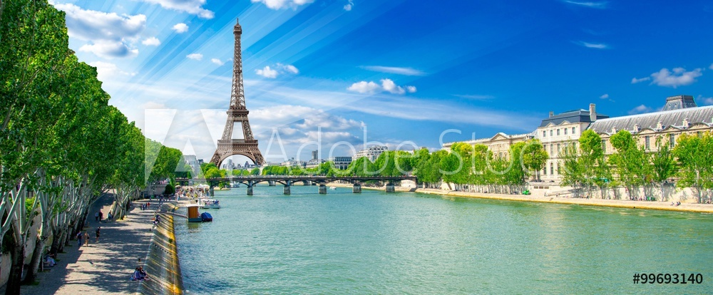
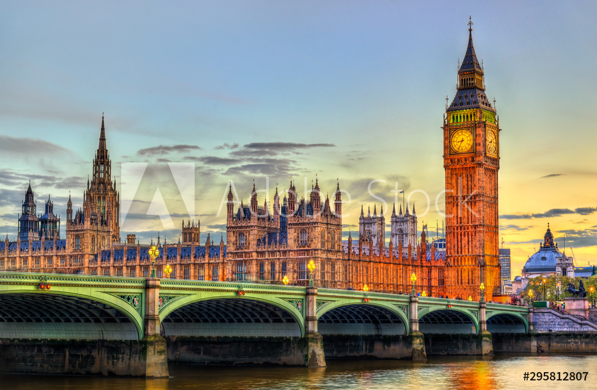
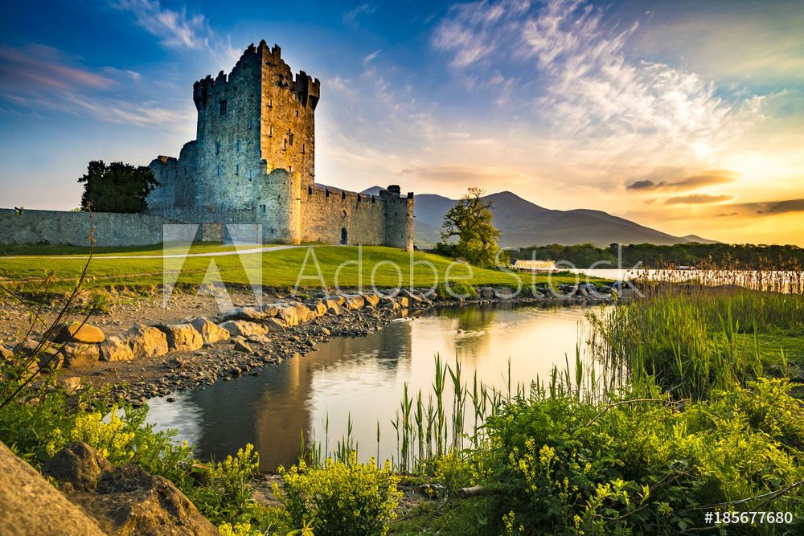

European Countries |
|---|
By Erin MacAskill
|  |
|---|
France is one of the globes oldest nations. The capital of France is Paris, and it's the most important and well known city Of the country. Paris holds some of the most famous landmarks in France, including the Eiffel Tower, and the Louvre. France has multiple different types of landscapes, including busy cities, and moutains. France is a very popular tourist destination, in 2018 they had 89.4 million visitors.
|  |
|---|
The UK is located in the north western part of Europe. The capital of the UK is London. London is extremly popular, thanks to the royal family. In the capital city, you can see the palace and the corwn jewls. You can also see attractions like big ben and the eye of London. In 2019, the UK got 40.9 million visits, and London was the third most vistied place in the world. And they grossed 28.44 billion dollars that year.
|  |
|---|
Ireland is located west of the UK. Dublin is the capital of Ireland, and it's known for the friendly people. Ireland is not nearly as popular as the other countried that have been mentioned. In 2017, Ireland got 9,932,100 visits. Some attractions in Ireland include multiple castles, beautiful cliffs, and Irish pubs.